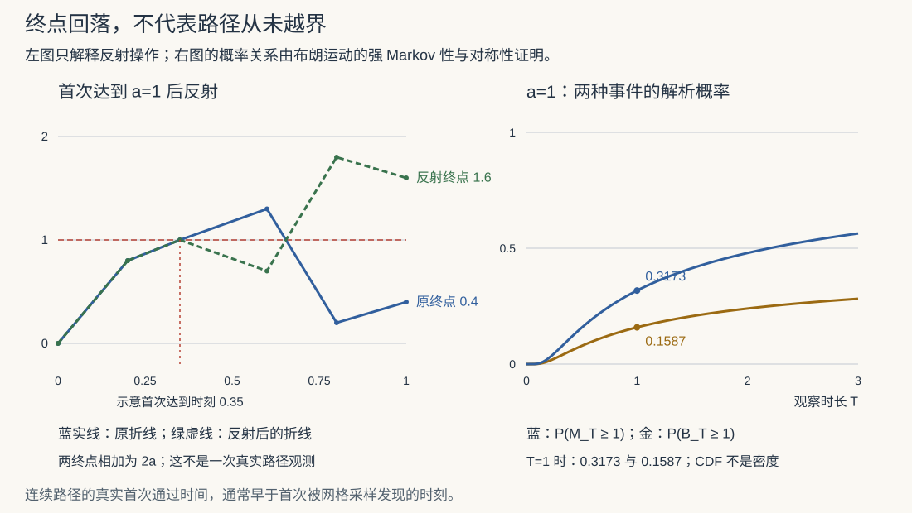

随机过程 IV · 布朗运动与鞅（一瞥）
收官页打开两扇通往研究生阶段的门：布朗运动（连续时间随机过程之王，金融数学的地基）与鞅（"公平赌博"的数学化，现代概率的统一语言）。定位是"一瞥"：定义、核心性质、两个漂亮应用——深挖属于随机分析课，但这一瞥足够支撑你读懂 Black–Scholes 和扩散模型的 SDE 语言。
1. 布朗运动：随机游走的极限

从随机游走出发：对称随机游走步长 \(\Delta x\)、步频 \(\Delta t\)，令 \(\Delta x = \sqrt{\Delta t} \to 0\)（这个缩放是唯一能得到非平凡极限的——方差 \(\frac{t}{\Delta t}(\Delta x)^2 = t\) 恰好有限），由 CLT（概率 V）各时刻趋于正态——极限过程即布朗运动。
定义 \(\{B(t), t \geq 0\}\) 为标准布朗运动（Wiener 过程），若：1. \(B(0) = 0\)；2. 独立增量；3. \(B(t) - B(s) \sim N(0,\ t - s)\)；4. 轨道连续。
（与 Poisson 过程恰成一对：同为独立平稳增量，一个连续正态、一个跳跃泊松——独立增量过程的两大原色。）
基本量：\(B(t) \sim N(0, t)\)；\(\mathrm{Cov}(B(s), B(t)) = \min(s, t)\)（一行推导：\(s < t\) 时 \(E[B_s B_t] = E[B_s(B_s + (B_t - B_s))] = s\)，独立增量灭掉交叉项）。
三条轨道性格（认知级）：轨道连续但处处不可导（数分 II 那个"病态"的 Weierstrass 函数在此成为常态——瞬时速度不存在，"速度"的方差是 \(\frac{1}{\Delta t} \to \infty\)）；自相似 \(B(ct) \overset{d}{=} \sqrt{c}\,B(t)\)（分形）；二次变差 \(\sum(\Delta B)^2 \to t\)（普通函数为 0——这条"\((dB)^2 = dt\)"正是 Itô 微积分需要重新发明链式法则的原因，随机分析的入口路标）。
2. 几何布朗运动与金融一瞥
股价不能为负、涨跌按比例发生，故建模对数：
——几何布朗运动（GBM）：对数收益率正态、独立增量（有效市场的数学表述），\(E S(t) = S_0 e^{\mu t}\)。那个 \(-\frac{\sigma^2}{2}\) 修正项来自 Jensen 不等式（概率 IV：\(E e^X > e^{EX}\)，波动本身抬高期望，要扣回去；严格推导即 Itô 引理的第一次上岗）。Black–Scholes 期权定价即在 GBM + 无套利下推出——金融工程整栋大楼的地基就是本页这个过程。
⚠️ 清醒剂：GBM 假设收益正态、波动恒定——真实市场厚尾、波动聚集（你的研报库里"尾部风险"一词的数学背景）；它是"第一近似"而非真相。
3. 鞅：公平赌博的数学
定义 \(\{M_n\}\) 关于信息流 \(\{\mathcal{F}_n\}\)（到 \(n\) 为止的全部历史）是鞅，若 \(E|M_n| < \infty\) 且
——已知全部历史，下一步的条件期望 = 现值（公平：既不期望赚也不期望亏；条件期望的塔性质——概率 IV——是鞅论的日常语法）。\(\geq\) 为下鞅（有利），\(\leq\) 为上鞅（不利，赌场给你的那种）。
三个标准例：对称随机游走 \(S_n\)；\(S_n^2 - n\)（平方减补偿——方差的"公平化"）；指数鞅 \(e^{\theta S_n}/(\cosh\theta)^n\)。判鞅是考题常型：算一次条件期望即可。
定理（可选停时定理，OST，条件从略的实用版） 鞅在"合理的"停时 \(\tau\) 处仍公平：\(E[M_\tau] = E[M_0]\)。
——"没有能把公平赌博变成稳赢的退出策略"（赌徒的所有"打法"在数学上被一句话终结）。它同时是强大的计算工具：
应用（赌徒破产的鞅式秒解） 对称赌局，本金 \(i\)、目标 \(N\)：\(S_n\) 是鞅，OST 给 \(i = E[S_\tau] = N \cdot h_i + 0 \cdot (1 - h_i)\) ⇒ \(h_i = i/N\)——随机过程 II 里解差分方程的结论，一行拿到。再用鞅 \(S_n^2 - n\)：\(E[\tau] = i(N - i)\)（期望局数，同样一行）。鞅方法 = 找对守恒量，与物理里的守恒律思维同构。
🔗 衔接：鞅是"信息与公平"的语言——金融定价的核心定理（风险中性测度下折现价格是鞅）、概率算法分析（Azuma 不等式一族集中不等式）都说这门语言；扩散模型的 SDE \(dx = f\,dt + g\,dB\)（comfy 课 03 讲的采样方程）里的 \(dB\) 就是本页的布朗运动增量——你在 ComfyUI 里每按一次生成，就有一条离散化的布朗轨道在潜空间里被采样。
4. 典型例题
例 1（布朗运动概率计算） \(B(2) \sim N(0, 2)\)，求 \(P(B(2) > 1 \mid B(1) = 1)\)。 解：\(B(2) - B(1) \sim N(0,1)\) 独立于历史：\(P(B(2) - B(1) > 0) = \frac12\)。（独立增量把条件概率变成增量概率——布朗运动计算的第一反射。）
例 2（协方差） 求 \(D(B(1) + B(3))\)。 解：\(D = 1 + 3 + 2\min(1,3) = 6\)。
例 3（判鞅） 验证 \(M_n = S_n^2 - n\)（\(S_n\) 对称随机游走）是鞅： \(E[M_{n+1}\mid\mathcal F_n] = E[(S_n + X)^2 \mid \mathcal F_n] - (n+1) = S_n^2 + 2S_n\underbrace{E[X]}_{0} + \underbrace{E[X^2]}_{1} - n - 1 = M_n\) ✓。\(\blacksquare\)
随机过程四页完工：Poisson（跳）、Markov（转移）、布朗（连续扩散）、鞅（公平）——四种原型覆盖了随机演化的基本语法。概率统计线至此全线建成。